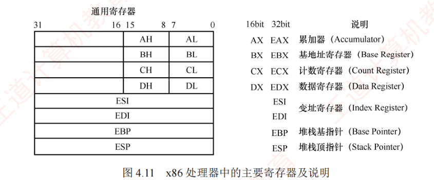
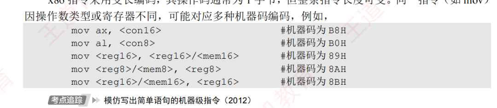
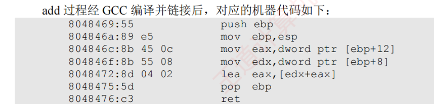

4.3 程序的机器级代码表示
本节是 2022 年新增考点（涉及汇编代码的年份：2012、2014、2015、2017、2019、2023、2024），但相关知识点早已多次以综合题形式出现在历年真题中，难度较大，不少考生感觉到无从下手。通过本节学习后，考生应从内容应对此类考题。统考大纲不指定具体指令集，但历年真题主要考查 x86 和 MIPS 伪指令。其中，MIPS 指令通常会在试题中附带功能说明，而 x86 指令则常作为默认考查对象。因此，本节重点介绍 x86 汇编指令。
4.3.1常用汇编指令介绍
1. 相关寄存器
x86 处理器中有 8 个 32 位通用寄存器，主要寄存器及说明如图 4.11 所示。为向后兼容早期的 16 位和 8 位架构，EAX、EBX、ECX 和 EDX 的低 16 位可作为独立寄存器使用（分别记为 AX、BX、CX、DX），而每个 16 位寄存器又可进一步分为两个 8 位寄存器（如 AX 分为 AH 和 AL）。其中，E 表示 Extended，用来标识 32 位寄存器。

各寄存器的惯用角色：EAX 为累加器（Accumulator）、EBX 为基址寄存器（Base Register）、ECX 为计数寄存器（Count Register）、EDX 为数据寄存器（Data Register）、ESI 与 EDI 为变址寄存器（Index Register）、EBP 为堆栈基址指针（Base Pointer）、ESP 为堆栈栈顶指针（Stack Pointer）。除 EBP（基址指针）和 ESP（栈顶指针）外，其余通用寄存器的用法是比较灵活的。
2. 常用指令
汇编指令通常可分为数据传送指令、算术与逻辑运算指令和控制流指令。下面以 Intel 格式为例，介绍一些常用指令。以下用操作数的标记分别表示寄存器、内存和常数：
<reg>：表示任意寄存器。若其后有寄存器字号，则指明其位数，如<reg32>表示 32 位寄存器（eax、ebx、ecx、edx、esi、edi、esp 或 ebp）；<reg16>表示 16 位寄存器（ax、bx、cx 或 dx）；<reg8>表示 8 位寄存器（ah、al、bh、bl、ch、cl、dh、dl）；<mem>：表示内存地址，如[eax]、[var+4]或dword ptr [eax+ebx]；<con>：表示 8 位（<con8>）、16 位（<con16>）或 32 位（<con32>）常数。
x86 指令的机器代码一般为 1 字节以上，但整体指令长度可变。同一指令（如 mov）因操作数类型或寄存器不同，可能对应多种机器码编码，如图 4.12 所示。

（1）数据传送指令
1）mov 指令。将第二个操作数（寄存器内容、内存内容或常数值）复制到第一个操作数（寄存器或内存）。其语法如下：
mov <reg>,<reg>
mov <mem>,<reg>
mov <reg>,<mem>
mov <reg>,<con>
mov <mem>,<con>举例：
mov eax, ebx ; 将 ebx 寄存器的值复制到 eax
mov byte ptr [var], 5 ; 将常数 5 存入 1 字节的内存单元 var双操作数不能同时为内存，即 mov 指令不能用于直接从内存复制到内存。若需在内存之间复制，可先将源内存内容加载到寄存器，再从该寄存器写入目标内存。
2）push 指令。将操作数压入栈中，常用于函数调用和现场保护。ESP 是栈顶，入栈时先将 ESP 减 4（栈向低地址方向增长），再将操作数压入 ESP 所指地址。其语法如下（注意：栈中元素固定为 32 位）：
push <reg32>
push <mem>
push <con32>举例：
push eax ; 将 eax 的值压栈
push [var] ; 将地址 var 处的 4 字节内容压栈3）pop 指令。与 push 指令相反，从栈中弹出数据。出栈时先将 ESP 所指地址的内容读出，再将 ESP 加 4。其语法如下：
pop <reg> ; 弹出栈顶元素并存入 eax 等寄存器
pop <mem> ; 弹出栈顶元素并存入 ebx 等所指的 4 字节内存地址（2）算术与逻辑运算指令
1）add/sub 指令。add 将两个操作数相加，sub 将第一个操作数减去第二个操作数，结果均保存在第一个操作数中。其语法如下：
add <reg>,<reg> / sub <reg>,<reg>
add <reg>,<mem> / sub <reg>,<mem>
add <mem>,<reg> / sub <mem>,<reg>
add <reg>,<con> / sub <reg>,<con>
add <mem>,<con> / sub <mem>,<con>举例：
sub eax, 10 ; eax ← eax - 10
add byte ptr [var], 10 ; 将地址 var 处的 1 字节内容与 10 相加，结果存回该地址2）inc/dec 指令。分别对操作数执行自增 1 或自减 1 操作。其语法如下：
inc <reg> / dec <reg>
inc <mem> / dec <mem>举例：
dec eax ; eax 值自减 1
inc dword ptr [var] ; 将地址 var 处的 4 字节内容自增 13）imul 指令。有符号整数乘法指令，支持两种格式：① 双操作数格式，将第一、第二操作数相乘，结果存入第一个操作数（必须为寄存器）；② 三操作数格式，将第二、第三操作数相乘，结果存入第一个操作数（必须为寄存器）。其语法如下：
imul <reg32>,<reg32>
imul <reg32>,<mem>
imul <reg32>,<reg32>,<con>
imul <reg32>,<mem>,<con>举例：
imul eax, [var] ; eax ← eax * [var]
imul esi, edi, 25 ; esi ← edi * 25无符号整数乘法用 mul 指令实现，仅支持单操作数格式，被乘数隐含在 eax 中，乘积结果放在 edx:eax 中。当 edx≠0 时，表示结果无法用 32 位无符号数表示，CPU 置 CF=1 和 OF=1。imul 在结果溢出时，同样置 CF=1 和 OF=1。无符号乘法以 CF 判断溢出，有符号乘法则以 OF 为准。
4）idiv 指令。有符号整数除法指令，仅指定除数，被除数为 edx:eax 组成的 64 位有符号数（edx 为高 32 位，eax 为低 32 位）。执行后，商存入 eax，余数存入 edx。其语法如下：
idiv <reg32>
idiv <mem>举例：
idiv ebx
idiv dword ptr [var]无符号整数除法指令 div 的格式与 idiv 完全一致，仅对操作数的解释不同。
5）and/or/xor 指令。分别执行按位与、或、异或操作，结果存入第一个操作数。其语法如下：
and <reg>,<reg> / or <reg>,<reg> / xor <reg>,<reg>
and <reg>,<mem> / or <reg>,<mem> / xor <reg>,<mem>
and <reg>,<con> / or <reg>,<con> / xor <reg>,<con>
and <mem>,<con> / or <mem>,<con> / xor <mem>,<con>举例：
and eax, 0FH ; 将 eax 的高 28 位置 0，低 4 位保持不变
xor edx, edx ; 将 edx 清零6）not 指令。按位取反指令，将操作数的每一位 0 变 1、1 变 0。其语法如下：
not <reg>
not <mem>举例：
not byte ptr [var] ; 将地址 var 处的 1 字节内容按位取反7）neg 指令。取负指令，计算操作数的二进制补码（\(-x\)）。其语法如下：
neg <reg>
neg <mem>举例：
neg eax ; eax ← -eax8）shl/shr 指令。逻辑移位指令，shl 为逻辑左移，shr 为逻辑右移，第一个操作数是被移位数，第二个操作数是移位位数，其语法如下：
shl <reg>,<con8> / shr <reg>,<con8>
shl <mem>,<con8> / shr <mem>,<con8>
shl <reg>,<cl> / shr <reg>,<cl>
shl <mem>,<cl> / shr <mem>,<cl>举例：
shl eax, 1 ; eax 逻辑左移 1 位
shr ebx, cl ; ebx 逻辑右移 n 位（n 为 cl 中的值）（3）控制流指令
x86 处理器通过指令指针寄存器 EIP（相当于程序计数器即 PC）指示当前执行指令的地址。每条指令执行后，EIP 自动指向下一条指令。EIP 不能直接访问，但可通过控制流指令修改。程序中常用标签（label）标记指令地址，例如：
指令①
begin:
指令②
指令③此处标签 begin 指向第二条指令，控制流指令通过标签实现转移。
1）jmp 指令。无条件转移到 label 标签所指的地址继续执行。其语法如下：
jmp <label>举例：
jmp begin ; 转移到 begin 标记处执行2）j<condition> 指令。条件转移指令，根据程序状态字寄存器中的状态标志（如零标志 ZF、符号标志 SF 等）决定是否转移。常见指令包括：
je <label> ; 相等时转移（jump when equal）
jz <label> ; 结果为零时转移（jump when last result was zero）
jne <label> ; 不相等时转移（jump when not equal）
jg <label> ; 大于时转移（jump when greater）
jge <label> ; 大于等于时转移（jump when greater than or equal to）
jl <label> ; 小于时转移（jump when less than）
jle <label> ; 小于等于时转移（jump when less than or equal to）举例：
cmp eax, ebx
jle done ; 若 eax≤ebx，则转移到 done；否则顺序执行下一条指令3）cmp/test 指令。cmp 指令执行减法但不保存结果，仅根据结果设置标志位；test 指令执行按位与运算但不保存结果，仅更新标志位（特别是 ZF）。其语法如下：
cmp <reg>,<reg> / test <reg>,<reg>
cmp <reg>,<mem> / test <reg>,<mem>
cmp <mem>,<reg> / test <mem>,<reg>
cmp <reg>,<con> / test <reg>,<con>cmp 和 test 指令常与 j<condition> 指令配合使用。举例：
cmp dword ptr [var], 10 ; 将 var 处的 4 字节内容与 10 比较
jne loop ; 若不相等则跳到 loop；否则顺序执行
test eax, eax ; 测试 eax 是否为零
jz xxxx ; 若 eax 为零（ZF=1），则转移到 xxxx4）call/ret 指令。分别用于实现子程序（过程）调用与返回，其语法如下：
call <label>
retcall 指令将下一条指令的地址（返回地址）压入栈，然后转移到 label 处执行；ret 指令从栈顶弹出返回地址，并转移到该地址继续执行。call 和 ret 是函数调用机制的核心指令。
掌握上述指令的语法与功能，有助于解答相关考题。建议读者在学习 C 语言程序时，结合调试工具（如 GDB）查看其对应的汇编代码，以加深对机器级指令的理解。
3. 汇编指令格式
使用不同的编程工具开发程序时，所用的汇编器也不同，主要有 AT&T 格式和 Intel 格式两种（统考常涉及的是 Intel 格式）。它们的主要区别如下：
- AT&T 格式的指令名必须使用小写字母，Intel 格式对大小写不敏感；
- 操作数顺序不同：AT&T 格式为「源, 目的」，Intel 格式为「目的, 源」；
- AT&T 格式中，寄存器前加「%」，立即数前加「$」；Intel 格式中，两者均无前缀；
- 内存寻址符号不同：AT&T 使用圆括号 ( )，Intel 使用方括号 [ ]；
- 复杂寻址方式表示不同：AT&T 格式的内存操作数
disp(base, index, scale)分别表示偏移量、基址寄存器、变址寄存器和比例因子，如8(%edx,%eax,2)表示操作数地址为 R[edx]+R[eax]*2+8；对应的 Intel 格式为[edx+eax*2+8]； - 操作数长度指定方式不同：AT&T 格式在指令助记符后加后缀，表明操作数大小，「b」表示 byte（字节）、「w」表示 word（字）或「l」表示 long（双字）；Intel 格式则在内存操作数前使用
byte ptr、word ptr或dword ptr显式指定长度。
表 4.2 所示为 AT&T 格式与 Intel 格式的指令对比。其中，mov 指令用于在寄存器与内存之间或寄存器之间传送数据；lea 指令用于将有效地址（而非内存内容）加载到寄存器。
| AT&T 格式 | Intel 格式 | 含义 |
|---|---|---|
mov $100, %eax | mov eax, 100 | 100→R[eax] |
mov %eax, %ebx | mov ebx, eax | R[eax]→R[ebx] |
mov %eax, (%ebx) | mov [ebx], eax | R[eax]→M[R[ebx]] |
mov %eax, -8(%ebp) | mov [ebp-8], eax | R[eax]→M[R[ebp]-8] |
lea 8(%edx,%eax,2), %eax | lea eax, [edx+eax*2+8] | R[edx]+R[eax]*2+8→R[eax] |
movl %eax, %ebx | mov dword ptr [ebx], eax | 32 位 R[eax]→M[R[ebx]] |
注：R[r] 表示寄存器 r 的内容，M[addr] 表示存储单元 addr 的内容，→ 表示信息传送方向。两种汇编格式的相互转换并不复杂，历年真题通常采用 Intel 格式。
movl %eax, (%ebx)；原书此格的 AT&T 列印作 movl %eax, %ebx，看表时以「含义」列为准，重点是记住 l 后缀 ↔ dword ptr 的长度对应关系。
4.3.2选择语句的机器级表示
常见的选择结构语句有 if-then、if-then-else 等。编译器通过条件码（标志位）设置指令和各类条件转移指令来实现程序中的选择结构。条件码描述了最近算术或逻辑运算的结果属性，通常由专门的算术指令在执行时自动设置。常见的条件码有 CF、ZF、SF 和 OF。
常见的算术逻辑运算指令（add、sub、imul、or、and、shl、inc、dec、not、sal 等）在执行时会自动设置条件码。此外，cmp 和 test 指令专门用于设置条件码，它们执行相应的运算（cmp 相当于 sub，test 相当于 and），但不保存结果，仅根据结果更新标志位。
之前介绍的 j<condition> 条件转移指令，就是根据条件码 ZF、OF 或 SF 来实现转移的。if-else 语句的通用形式如下：
if(test_expr) //test_expr 为条件测试表达式
then_statement //当 test_expr 为真时，执行 then_statement 语句
else
else_statement //当 test_expr 为假时，执行 else_statement 语句在 C 语言中，test_expr 是一个整数表达式，其值为 0 时表示「假」，非 0（包括负数）时表示「真」。两个分支语句（then_statement 或 else_statement）中只会执行其中一个。
这种通用形式可以被翻译成如下等价的 goto 语句形式：
t=test_expr; //保存测试表达式的结果
if(!t) goto false; //若条件为假（t=0），选择 else 分支
then_statement //分支为真（t≠0）时执行
goto done; //执行完该分支后，跳过另一分支，转移至结束点
false:
else_statement //假分支：仅当 t=0 时执行
done: //整个 if-else 结构的结束点下面以一个具体的 C 语言函数为例：
int get_cont(int *p1, int *p2){
if(p1 > p2)
return *p2;
else
return *p1;
}已知 p1 和 p2 对应的实参已被压入调用函数的栈帧，它们对应的存储地址分别为 R[ebp]+8、R[ebp]+12（EBP 指向当前栈帧底部），函数返回值需存放在 eax 中。对应的汇编代码为
mov eax, dword ptr [ebp+8] #R[eax]←M[R[ebp]+8]，即加载参数 p1 到 eax
mov edx, dword ptr [ebp+12] #R[edx]←M[R[ebp]+12]，即加载参数 p2 到 edx
cmp eax, edx #比较 p1 和 p2，根据结果设置条件码
jbe .L1 #若 p1<=p2，则转移到 L1
mov eax, dword ptr [edx] #R[eax]←M[R[edx]]，即取 *p2 作为返回值
jmp .L2 #无条件转移到 L2，跳过 else 分支
.L1:
mov eax, dword ptr [eax] #R[eax]←M[R[eax]]，即取 *p1 作为返回值
.L2:p1 和 p2 是指针变量，在 32 位机器中占 4 字节（一个 dword），比较指令 cmp 的两个操作数应来自寄存器，因此需先将 p1 和 p2 对应的实参从栈中加载到寄存器。指针比较在 C 语言中按无符号数处理，故使用 jbe（无符号小于等于）进行条件转移。
4.3.3循环语句的机器级表示
常见的循环结构语句有 while、for 和 do-while。x86 指令集中没有直接对应这些高级循环结构的指令，编译器通过条件测试（如 cmp、test）和条件转移（如 je、jne、jg、jl 等）指令的组合来实现循环逻辑。实际上，大多数编译器都会将这三种循环转换成 do-while 形式。
1. do-while 循环
do-while 语句是一种「后测试」型循环，其通用形式如下：
do //先执行循环体，再判断循环条件
body_statement //body_statement 为循环体执行语句
while(test_expr); //test_expr 为循环继续的条件表达式这种结构可以翻译成如下所示的条件和 goto 语句组合：
loop:
body_statement //执行循环体语句（首次进入时必然执行）
t=test_expr; //计算循环条件
if(t) //若条件为真（t≠0）
goto loop; //跳回 loop 标签，继续下一轮迭代由于循环体在条件判断之前执行，因此无论 test_expr 的初始值是什么，body_statement 至少会被执行一次。每次执行结束后，程序会重新计算 test_expr 的值：如果结果为真（非零），就跳回循环开头继续执行；否则，顺序执行后续代码，退出循环。
2. while 循环
while 语句是一种「前测试」型循环，其通用形式如下：
while(test_expr) //test_expr 为判断循环体的条件表达式
body_statement //当 test_expr 为真时重复执行 body_statement 语句与 do-while 不同，while 循环第一次执行 body_statement 之前就会测试 test_expr 的值。如果初始条件不假（test_expr≠0），那么循环体一次都不会执行。
为了用转移指令实现这一语义，编译器通常采用「先判断、再进入循环体」的策略。具体来说，可以将 while 循环转换为一个带前置判断的 do-while 式结构，如下所示：
t=test_expr; //计算初始循环条件
if(!t) //若初始条件为假（t=0）
goto done; //跳过循环体，直接转至结束点
do
body_statement //执行循环体
while(test_expr); //重新测试条件
done: //循环结构的结束点进一步展开为纯 goto 语句的形式：
t=test_expr; //计算初始循环条件
if(!t) //若为假
goto done; //跳过循环
loop:
body_statement //执行循环体
t=test_expr; //重新计算条件
if(t) //若仍为真
goto loop; //继续下一轮
done:这种转换确保了 while 循环「先判断、后执行」的语义，同时复用了 do-while 的结构。
3. for 循环
for 循环是一种语法更紧凑的循环形式，其通用形式如下：
for(init_expr; test_expr; update_expr)
body_statement //body_statement 为循环体执行语句init_expr 为初始化表达式，用于初始化循环计数器（如 i=0）；test_expr 为条件判断表达式，每次执行循环体前测试（如 i<10）；update_expr 为更新表达式，每次循环体执行完后执行（如 i++）。
从执行逻辑上看，for 循环完全等价于下面这个 while 循环代码：
init_expr; //初始化（只执行一次）
while(test_expr){
body_statement //执行循环体
update_expr; //更新循环变量
}因此，可以先将 for 循环转为 while 形式，再按照前述方法转换为 goto 语句：
init_expr; //执行初始化
t=test_expr; //测试循环条件
if(!t) //若初始条件为假
goto done; //跳过循环
loop:
body_statement //执行循环体
update_expr; //更新循环变量
t=test_expr; //重新测试条件
if(t) //若条件为真
goto loop; //跳回循环体
done:下面以一个具体的 C 语言函数为例，展示 for 循环如何被转换为汇编代码：
int nsum_for(int n){
int i;
int result = 0;
for(i=1; i<=n; i++)
result += i;
return result;
}在这段代码中，for 循环的各个组成部分如下：
init_expr i=1
test_expr i<=n
update_expr i++
body_statement result += i通过替换前面给出的模板中的相应位置，很容易将 for 循环转换为 while 或 do-while 循环。将这个函数翻译为 goto 语句代码后，不难得出其过程体的汇编代码：
mov ecx, dword ptr [ebp+8] #R[ecx]←M[R[ebp]+8]，即加载参数 n 到 ecx
mov eax, 0 #R[eax]←0，即初始化 result=0
mov edx, 1 #R[edx]←1，即初始化 i=1
cmp edx, ecx #比较 i 与 n（R[edx] 与 R[ecx]）并设置标志位
jg .L2 #If greater，则转移到 L2
.L1: #循环体入口
add eax, edx #R[eax]←R[eax]+R[edx]，即 result += i
add edx, 1 #R[edx]←R[edx]+1，即 i++
cmp edx, ecx #再次比较 i 与 n
jle .L1 #If less or equal，则转移到 L1
.L2: #循环结束点已知变量 n 已被压入调用函数的栈帧，其对应的存储地址为 R[ebp]+8。编译器将频繁使用的局部变量优化到寄存器中：此处，result 被分配到 eax（同时也是返回值寄存器），i 被分配到 edx。由于 i 与 n 均为 int 型，判断条件 i<=n 属于有符号数比较，因此使用 jle 和 jg 等有符号转移指令。
4.3.4过程调用的机器级表示
在程序执行过程中，当一个过程（函数）调用另一个过程时，需要完成参数传递、控制转移、现场保护与返回等一系列操作。x86 架构通过 call 和 ret 指令支持这一机制，它们都属于无条件转移指令，但配合栈的使用，实现了完整的「调用—返回」语义。
假定过程 P（调用者）调用过程 Q（被调用者），被调用过程的执行步骤如下：
- P 将入口参数（实参）放到 Q 能访问到的地方；
- P 执行 call 指令，将返回地址（call 的下一条指令地址）压入栈中，并转移到 Q；
- Q 建立自己的栈帧，为局部变量分配空间，并在必要时保存某些寄存器；
- Q 执行主体代码；
- Q 将返回结果放到约定位置，释放局部变量空间，并恢复之前保存的寄存器；
- Q 执行 ret 指令，从栈顶弹出返回地址，并转移到 P 继续执行。
上述过程中，入口参数、返回地址、局部变量、返回结果以及需保护的寄存器内容，都需要在内存中的某个位置保存。由于寄存器数量有限，调用双方若共用寄存器资源，若不加保护地直接覆盖，将导致程序出错。因此，调用约定做了如下重要规定：寄存器 EAX、ECX、EDX 是调用者保存寄存器。若 P 想在调用后仍使用这些寄存器的值，则 P 必须在调用前自行保存（如压栈），并在返回后恢复。寄存器 EBX、ESI、EDI 是被调用者保存寄存器：若 Q 需要使用这些寄存器，则 Q 必须在使用前将它们保存到栈中，并在返回前恢复。
每当一个过程在执行时，都会在运行时栈中分配一块栈帧区域，称为栈帧。整个运行时栈由多个连续的栈帧组成。EBP（基址指针）指向当前栈帧的基址（保存旧 EBP 的位置），ESP（栈指针）始终指向当前栈顶，栈从高地址向低地址增长。有了栈帧，ESP 随着数据的入栈/出栈动态变化，而 EBP 在当前过程执行期间保持不变，使过程能通过固定偏移量访问参数和局部变量。
下面用一个简单的 C 语言程序来说明过程调用的机器级实现。
int addint(int x, int y){
return x+y;
}
int caller(){
int temp1=125;
int temp2=80;
int sum=add(temp1, temp2);
return sum;
}经 GCC 编译后，caller 对应的汇编代码如下：
push ebp #保存调用者 P 的 EBP
mov ebp, esp #建立栈帧：EBP←当前栈顶
sub esp, 24 #为局部变量和参数区分配 24 字节空间
mov [ebp-12], 125 #即 temp1=125
mov [ebp-8], 80 #即 temp2=80
mov eax, dword ptr [ebp-8] #R[eax]←M[R[ebp]-8]，即 temp2
mov [esp+4], eax #M[R[esp]+4]←R[eax]，将 temp2 放入参数区高地址
mov eax, dword ptr [ebp-12] #R[eax]←M[R[ebp]-12]，即 temp1
mov [esp], eax #M[R[esp]]←R[eax]，将 temp1 放入参数区低地址
call addint #调用 addint，返回值将保存于 EAX
mov [ebp-4], eax #M[R[ebp]-4]←R[eax]，将返回值保存到 sum
mov eax, dword ptr [ebp-4] #R[eax]←M[R[ebp]-4]，将 sum 作为返回值
leave #等价于 mov esp,ebp 和 pop ebp
ret #弹出返回地址并返回假设 caller 被过程 P 调用。在执行完「sub esp, 24」后，caller 的栈帧已建立，ESP 指向新栈顶。GCC 为 caller 分配了 24 字节的空间，从代码可见：
- caller 仅使用了 EAX（属调用者保存寄存器），没有使用任何被调用者保存寄存器，因此其栈帧中除了通过「push ebp」保存调用者 P 的旧 EBP 外，无须保存其他寄存器；
- caller 的三个局部变量 temp1、temp2 和 sum 被分配在栈帧中，共 12 字节；
- 在 call 指令调用 addint 之前，caller 依次将入口参数 temp2 和 temp1 的值（80 和 125）写入参数区：temp1 在低地址（[esp]），temp2 在高地址（[esp+4]）——参数入栈顺序与形参表相反（从右到左），参数区共占 8 字节；
- 执行 call 指令时把返回地址压入栈中，占 4 字节。
包括最初压入栈中的旧 EBP 值（4 字节）在内，caller 栈帧实际使用的大小是 \(4+12+8+4=28\) 字节。然而，由于 GCC 为了保证数据的严格对齐，规定每个函数的栈帧大小必须是 16 字节的倍数，最终分配的栈帧大小为 32 字节，这意味着有 4 字节（未使用）作为对齐填充。
call 指令执行后，add 函数的返回值保存在 EAX 中。因此，call 指令后面的两条指令分别完成：指令「mov [ebp-4], eax」将 add 的结果保存在变量 sum 的存储位置，该变量位于地址 R[ebp]-4；指令「mov eax, dword ptr [ebp-4]」再将 sum 的值加载到 EAX，作为 caller 的返回值。
在执行 ret 指令之前，必须释放当前栈帧并恢复调用者 P 的栈顶指针。上述第 14 行 leave 指令正是用于完成这一任务，其功能等价于下面两条指令：
mov esp, ebp #将栈指针 ESP 设置为当前 EBP 的值，即指向保存旧 EBP 的位置
pop ebp #从栈中弹出旧 EBP 值，恢复调用过程 P 的基址指针执行完这两条指令后，EBP 已恢复为过程 P 中的原值，而 ESP 则指向栈顶的返回地址。此时，ret 指令便可从 ESP 所指位置取出该返回地址，并转移回过程 P 继续执行。当然，编译器也可以不使用 leave 指令，而是通过显式的 pop 操作配合对 ESP 的调整来实现栈帧的回收。
add 过程经 GCC 编译并链接后，对应的机器代码如下：

通常，一个过程的机器级代码可分为三个部分：准备阶段、过程体和结束阶段。
- 准备阶段（第 1、2 行）：「push ebp」将 caller 的 EBP 值保存到栈中，随后「mov ebp, esp」使 EBP 指向当前栈帧的基址。EBP 指向 add 栈帧底部，这里 add 的入口参数 x 和 y 对应的值（125 和 80）分别在地址为 R[ebp]+8、R[ebp]+12 的存储单元中；
- 过程体（第 3、4、5 行）：第 3 行将 y（[ebp+12]）加载到 EAX，第 4 行将 x（[ebp+8]）加载到 EDX，第 5 行使用 lea 指令计算 edx+eax，并将结果存回 EAX，作为函数的返回值。这里好像没有加法指令，实际上 lea 指令执行的是加法运算 R[edx]+R[eax]=x+y；
- 结束阶段（第 6、7 行）：「pop ebp」恢复 caller 的 EBP 值，使栈帧指针回到调用前的状态；随后 ret 指令从栈顶弹出返回地址，并转移回调用点。此时栈顶正是 call 指令执行时压入的返回地址，对应 caller 中紧跟在「call addint」之后的那条指令（mov [ebp-4], eax）。
由于 add 过程不包含局部变量，未使用任何被调用者保存的寄存器，且不再调用其他过程（没有入口参数和返回地址以外的访存），因此其栈帧结构极为简洁：仅需保存 EBP 以维持调用链的完整性，无须额外空间用于寄存器保存、局部变量或嵌套调用。